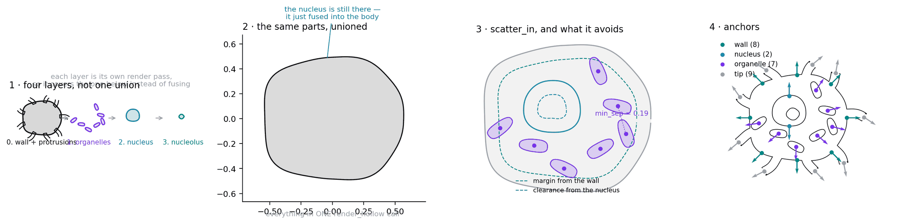
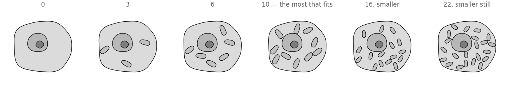
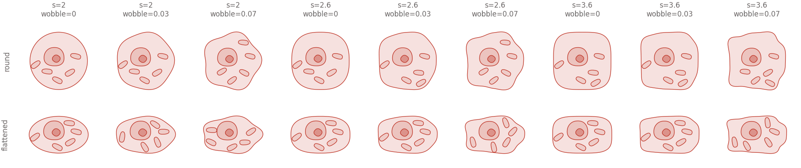
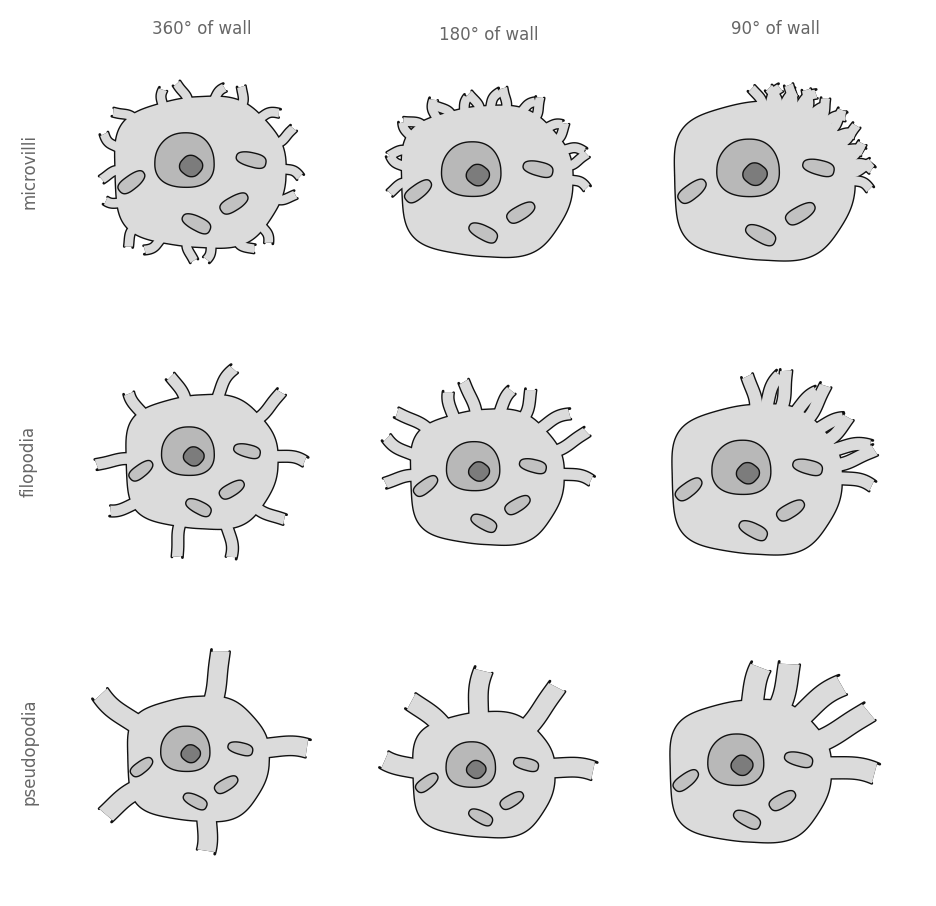
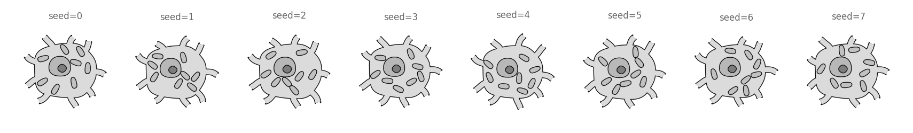

All examples Cells & tissues
Generic cell
A body, a nucleus, and whatever is loose in the cytoplasm. The first shape in this library that is not one unbroken outline.
cells.Blobcore.scattershape.Layer

This is the reason biodraw.core.shape.Layer exists.
The blueprint

1 · Four layers, not one union. Every shape before this one drew in a single render_hollow call, because a pyramidal cell really is one contour — soma, dendrites and spines all fusing. A cell with a nucleus cannot be. Each layer is its own render pass at its own zorder, so it covers the one beneath instead of joining it. The wall and its protrusions still share a layer, because those two should fuse.
2 · The same parts, unioned. What happens without layers, drawn from the identical outlines: the nucleus, the nucleolus and all seven organelles are still there. They have simply become part of the body's fill. There is no boolean difference in matplotlib, so "inside and still visible" can only be said by drawing again, higher up.
3 · scatter_in, and what it avoids. Nothing here grows along a path, so the branch engine has nothing to offer. The organelles are rejection-sampled inside the wall, with a margin off the membrane, a clearance from the nucleus, and a minimum separation from each other. Ask for more than fits and it raises — silently drawing four when nine were asked for would make the picture a claim the code never made.
4 · Anchors. Round the wall, on the nuclear envelope, one per organelle and one per protrusion tip. Same anchors as any other shape, so connectors and labels work here for free.
Drawing one
import biodraw as bd
cell = bd.cells.Blob(
radius=0.55, # the one size knob; everything else is a fraction of it
squareness=2.6, # 2 is an ellipse, 4 a rounded box
wobble=0.028, # swells the wall, so it does not read as an equation
nucleus=0.34, # nuclear radius, x the body radius
nucleolus=0.36, # ...and the nucleolus, x the nuclear radius
organelles=7, # scattered in the cytoplasm
seed=3, # fixes the scatter — same seed, same cell, forever
)
fig, ax = bd.canvas(figsize=(3.4, 3.2))
cell.draw(
ax=ax,
wall_lw=1.0, # wall thickness, in points
gid="cell", # names the layers in the exported SVG
)
cell.fit(ax, pad=0.12)
bd.save(fig, "cell.svg")The exported SVG carries one named group per layer — cell.nucleus.wall, cell.organelles.fill — so "select all the organelles" is one click in Illustrator rather than a hunt through anonymous paths.
How much is in it

cell = bd.cells.Blob(
organelles=10, # the most that fits at the default size
organelle_size=0.17, # long semi-axis, x the body radius
organelle_sep=0.34, # closest two may sit, x the body radius
)Past ten, scatter_in raises rather than drawing fewer. Getting more in means smaller organelles packed closer — which is a statement about the cell, not a rendering detail, so you have to say it: organelles=22, organelle_size=0.115, organelle_sep=0.22.
Body plans

cell = bd.cells.Blob(
squareness=2.6, # 2.0 ellipse · 2.6 settled cell · 3.6 rounded box
wobble=0.03, # 0 is visibly an equation; past 0.08 reads as damage
wobble_n=5, # how many swells go round
aspect=0.62, # semi-axis along y, x radius — below 1 it lies down
)Membranes

The same Branch engine that draws a dendrite, doing microvilli, filopodia and pseudopodia — which is the domain-neutrality claim being cashed rather than asserted.
cell = bd.cells.Blob(
protrusions=10, # short tubes out of the wall
protrusion_len=0.34, # x the body radius
protrusion_width=0.07, # x the body radius
protrusion_arc_deg=180, # sweep of wall they cover — 360 goes all round
protrusion_start_deg=0, # counter-clockwise from +x
)They are rooted inside the wall so their flat base is swallowed by the body's fill, and they share the body's layer so the two fuse. That is the same trick a basal dendrite uses on a soma corner.
Seeds

Nothing differs between these but seed. It fixes the organelle scatter, their angles, and how far each protrusion is knocked off its even slot — because a repeated part must not repeat exactly. At protrusion_jitter=0 the protrusions sit on perfect 40° centres and the cell reads as a gear.
row = [bd.cells.Blob(organelles=8, protrusions=9, seed=s) for s in range(8)]Same seed, same bytes — every time, on any machine with the same matplotlib. That is what makes a figure regenerable a year later when a reviewer asks for one more panel.
Anchors
| kind | where | count on the cell above |
|---|---|---|
wall | eight points round the membrane, on the axes and the diagonals | 8 |
nucleus | top and bottom of the nuclear envelope | 2 |
organelle | one per organelle, pointing away from the cell's centre | 7 |
tip | the end of each protrusion | 9 |
top = cell.anchor("wall", deg=90.0) # the top of the membrane
nuc = cell.anchor("nucleus", deg=90.0) # the nuclear envelope
third = cell.anchor("organelle", rank=2) # the third organelle placed
label_at = top.offset(0.08) # 0.08 clear of the wallwall anchors sit on the wobbled outline, not the ideal superellipse — superellipse_radius gives the un-wobbled wall, and an anchor placed with it alone floats off a cell that has any wobble at all.
Every figure above is output, not a stored asset — the full script that draws them.